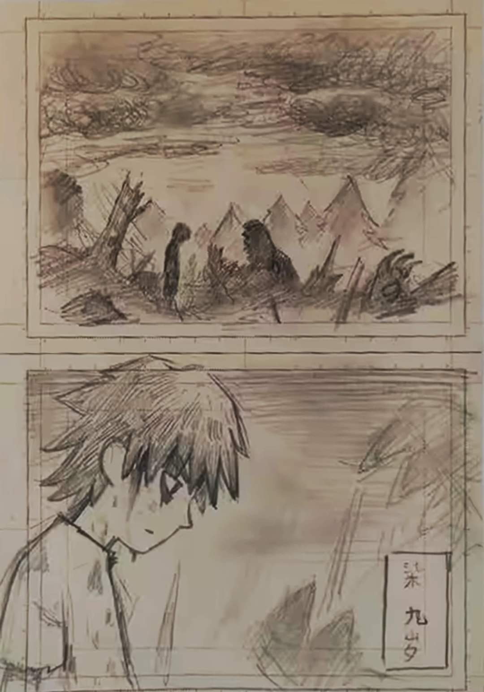

Hoy 18 de marzo hace poco se reveló un boceto del creador de la serie. Donde se puede ver a Seven de niño mientras ve lo que creemos que fue. Una guerra entre Stan y los Asesinos (Por lo que pude traducir de la imagen se refiere a la edad de Seven que en ese momento. eran 9 años )
Otro poco de información que tenemos sobre esta temporada es esta imagen donde se puede ver a Eleven derrotada y recordemos que ella junto con el guardaespaldas ya habían llegado a la casa de su padre, así que nos espera algo muy grande en esta temporada.
Al final de la tercera temporada se nos muestra un flashback de Seven Protegiendo a la que lo traicionó del dragón de Xuanwu el cual sabemos. Que Seven asesino, pero en esta imagen filtrada de la Temporada 5 Se nos muestra un boceto de dicho dragón así que posiblemente nos lleguén a mostrar todo el pasado de Seven.
Y en esta otra imagen que se filtro, se puede apreciar lo mucho que a cambiado la animación desde la temporada 1 :0.